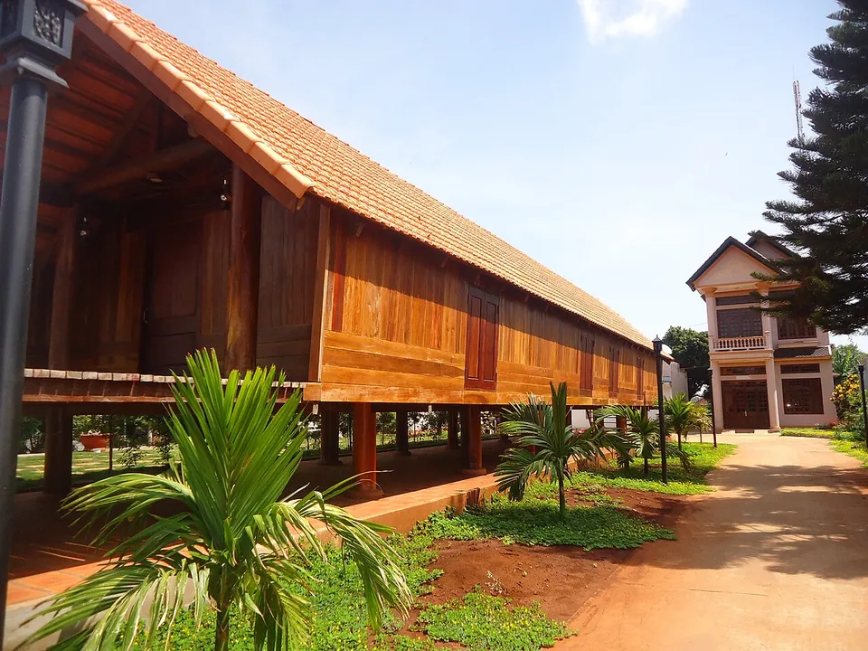
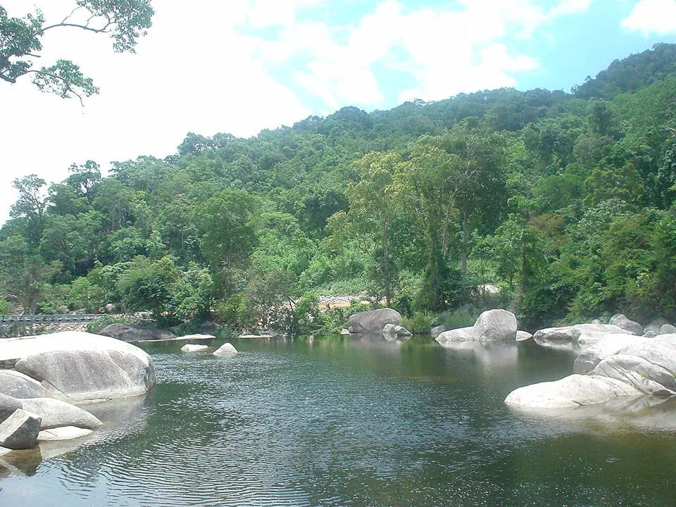
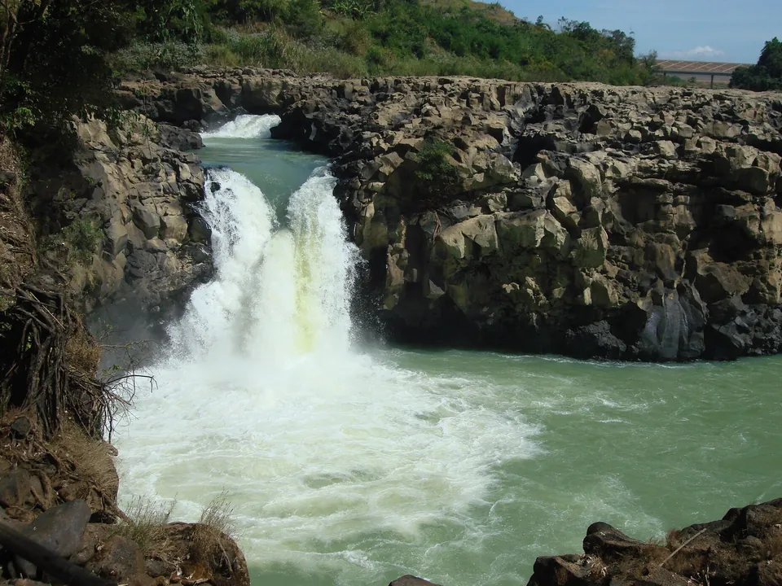
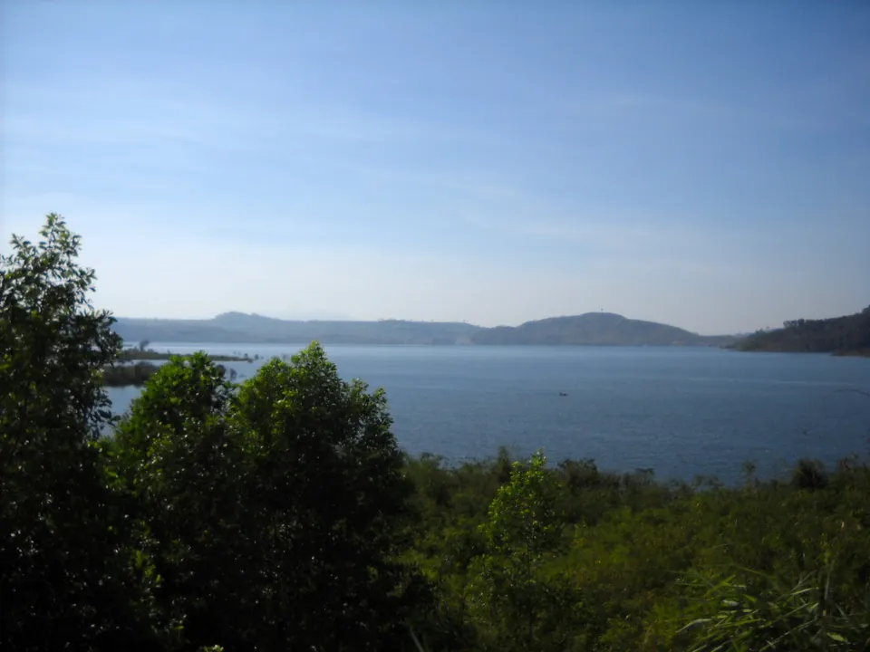
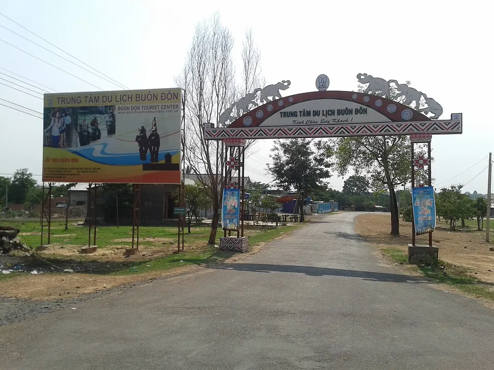

Ea Kar cách TP. Buôn Ma Thuột khoảng 52 km, là điểm xuất phát thuận tiện để khám phá những thắng cảnh nổi tiếng nhất của Đắk Lắk chỉ trong một ngày. Bài viết này tổng hợp 5 điểm đến đi về trong ngày, bảng giá thuê xe du lịch trọn gói từ Ea Kar và vài kinh nghiệm nhỏ để chuyến đi của gia đình, nhóm bạn hay đoàn công tác nhẹ nhàng và tiết kiệm hơn.
Vì Sao Nên Thuê Xe Riêng Khi Đi Du Lịch Từ Ea Kar?
Các điểm tham quan ở Đắk Lắk nằm rải rác, cách nhau hàng chục cây số, nhiều nơi xe khách không đi tới tận cổng. Tự lái xe máy đường dài vừa mệt vừa khó xoay xở khi trời đổ mưa. Thuê xe du lịch riêng từ Ea Kar giải quyết gọn những phiền toái đó:
Chủ động giờ giấc
Xuất phát lúc nào, dừng chân ở đâu, ở lại điểm nào lâu hơn đều do bạn quyết định. Giá trọn gói đã gồm thời gian chờ trong ngày, tối đa 10 tiếng.
Đón trả tận nơi
Tài xế đón ngay tại nhà, khách sạn hoặc cơ quan ở Ea Kar và đưa về tận cửa sau chuyến đi, không phải gửi xe hay bắt xe ra bến.
Chi phí rõ ràng từ đầu
Giá chốt trước khi đi, đã gồm xăng xe và tài xế. Đi nhóm 4 đến 7 người, chia đều chi phí theo đầu người rất dễ tính toán.
Tài xế thông thạo đường
Tài xế người địa phương nắm rõ đường đi, quán ăn ngon và thời điểm đẹp để tham quan từng nơi, giúp bạn không mất thời gian tìm đường.
5 Điểm Du Lịch Đắk Lắk Đi Về Trong Ngày Từ Ea Kar
Dưới đây là 5 điểm đến được khách của Xe Taxi Eakar chọn nhiều nhất, sắp xếp theo khoảng cách từ gần đến xa. Khoảng cách tính một chiều từ trung tâm Ea Kar.

TP. Buôn Ma Thuột
Thủ phủ cà phê của Tây Nguyên với Bảo tàng Thế giới Cà phê, Làng cà phê Trung Nguyên và buôn Akô Dhông, nơi còn giữ nhiều nhà dài truyền thống của người Ê Đê. Đây là lựa chọn hợp cho chuyến đi nửa ngày, hoặc kết hợp mua sắm và thăm người thân trong thành phố.

Vườn quốc gia Chư Yang Sin, thác Krông Kmar
Nằm ở huyện Krông Bông, gần Ea Kar nhất trong danh sách. Thác Krông Kmar đổ xuống giữa rừng nguyên sinh, không khí mát quanh năm, rất hợp với nhóm bạn thích dã ngoại, tắm suối và chụp ảnh thiên nhiên.

Thác Dray Nur - Dray Sáp
Cụm thác hùng vĩ trên dòng Sêrêpốk. Mùa mưa nước đổ trắng xoá cả một vùng, mùa khô lộ ra những vách đá bazan rất ấn tượng. Nên đến vào buổi sáng để có ánh sáng đẹp và tránh nắng gắt giữa trưa.

Hồ Lắk
Hồ nước ngọt tự nhiên lớn nhất Đắk Lắk, bên bờ là buôn Jun của người M'nông. Du khách có thể đi thuyền độc mộc trên hồ, dạo quanh buôn làng, ngắm hoàng hôn và thưởng thức các món cá hồ đặc trưng.

Khu du lịch Buôn Đôn
Vùng đất gắn với truyền thống thuần dưỡng voi nổi tiếng của Tây Nguyên. Điểm nhấn là những cây cầu treo bắc qua rừng, nhà dài Ê Đê và các hoạt động du lịch thân thiện với voi. Nên dành trọn một ngày hoặc ghép thêm thác Dray Nur.
Bảng Giá Thuê Xe Du Lịch Trọn Gói Từ Ea Kar
Giá dưới đây là giá trọn gói khứ hồi trong ngày, xuất phát và kết thúc tại Ea Kar, áp dụng cho xe 4 chỗ và xe 7 chỗ.
| Điểm du lịch | Khoảng cách (1 chiều) | Xe 4 chỗ | Xe 7 chỗ |
|---|---|---|---|
| TP. Buôn Ma Thuột | ~52 km | 800.000đ | 1.000.000đ |
| Vườn quốc gia Chư Yang Sin | ~60 km | 900.000đ | 1.100.000đ |
| Thác Dray Nur - Dray Sáp | ~80 km | 1.100.000đ | 1.400.000đ |
| Hồ Lắk | ~95 km | 1.300.000đ | 1.600.000đ |
| Khu du lịch Buôn Đôn | ~100 km | 1.400.000đ | 1.700.000đ |
| Combo Buôn Ma Thuột + Hồ Lắk | ~200 km | 1.900.000đ | 2.300.000đ |
| Combo Buôn Đôn + Thác Dray Nur | ~210 km | 2.000.000đ | 2.400.000đ |
- Giá đã gồm xăng xe, tài xế và thời gian chờ trong ngày (tối đa 10 tiếng).
- Chưa gồm vé tham quan, phí cầu đường, bến bãi (nếu có).
- Đi qua đêm hoặc nhiều ngày: gọi 0856 713 714 để được báo giá theo lịch trình.
Nếu chỉ cần đi một chiều hoặc tuyến không có trong bảng, giá xe 4 chỗ tính theo km: 14.000đ/km dưới 10 km, 10.000đ/km dưới 100 km và 9.000đ/km từ 100 km trở lên; đi khứ hồi thì lượt về giảm đến 70% tuỳ quãng đường. Xem đầy đủ tại trang bảng giá dịch vụ Xe Taxi Eakar.
Gợi Ý Lịch Trình Combo Một Ngày
Muốn đi được nhiều nơi nhất trong một ngày, bạn có thể chọn một trong hai lịch trình ghép dưới đây. Giờ giấc chỉ để tham khảo, tài xế sẽ điều chỉnh theo thời tiết và nhịp đi của đoàn.
Buôn Ma Thuột + Hồ Lắk
Khởi hành khoảng 7 giờ sáng, đến Buôn Ma Thuột tham quan Bảo tàng Thế giới Cà phê và thưởng thức ly cà phê đúng chất cao nguyên. Ăn trưa trong thành phố, đầu giờ chiều đi tiếp Hồ Lắk, đi thuyền độc mộc, dạo buôn Jun và ngắm hoàng hôn trên hồ trước khi quay về Ea Kar.
Thác Dray Nur + Buôn Đôn
Đi thác Dray Nur từ sáng sớm khi nắng còn dịu và ít khách. Gần trưa di chuyển sang Buôn Đôn, ăn trưa với các món đặc sản địa phương, buổi chiều đi cầu treo, thăm nhà dài và tìm hiểu văn hoá voi, về đến Ea Kar vào buổi tối.
Đặt Xe Du Lịch Chỉ Với 4 Bước
-
01Bước 1
Gọi hotline hoặc đặt online
Gọi 0856 713 714 hoặc để lại điểm đón, điểm đến và thời gian ở mục Đặt xe nhanh trên website.
Hỗ trợ 24/7 -
02Bước 2
Xác nhận lịch trình và giá
Tổng đài xác nhận điểm đón, các điểm muốn ghé, số người để chọn xe 4 hay 7 chỗ, rồi báo giá trọn gói trước khi đi.
Giá chốt trước -
03Bước 3
Tài xế có mặt đúng giờ
Đúng giờ hẹn, tài xế đón bạn tận nơi tại Ea Kar với xe sạch sẽ, đời mới.
Đón tận nơi -
04Bước 4
Khởi hành an toàn
Lên xe và tận hưởng chuyến đi, tài xế đưa bạn qua từng điểm theo lịch trình rồi về lại Ea Kar an toàn.
Về tận nhà
Kinh Nghiệm Để Chuyến Đi Trọn Vẹn
- Đặt xe trước 1 đến 2 ngày nếu đi vào cuối tuần, dịp lễ hoặc Tết để chắc chắn có xe đúng loại bạn cần.
- Xuất phát sớm, khoảng 6 giờ 30 đến 7 giờ sáng, để tránh nắng gắt và có nhiều thời gian hơn ở mỗi điểm.
- Mang giày bám tốt và áo khoác mỏng: đường xuống các thác thường dốc, đá trơn; trên cao nguyên sáng sớm và chiều tối khá se lạnh.
- Mùa mưa (thường từ tháng 5 đến tháng 10) thác nhiều nước và đẹp hơn nhưng đường có thể trơn, hãy hỏi tài xế về tình hình đường trước khi chốt lịch trình.
- Đi từ 5 người trở lên nên chọn xe 7 chỗ, chỉ thêm khoảng 200.000đ đến 300.000đ mà rộng rãi hơn nhiều, còn chỗ để đồ và quà mua về.
- Chuẩn bị ít tiền mặt cho vé tham quan, gửi đồ và mua đặc sản như cà phê, mắc ca, tiêu.
Câu Hỏi Thường Gặp
1Giá thuê xe du lịch đã bao gồm những gì?
Giá trọn gói đã gồm xăng xe, tài xế và thời gian chờ trong ngày tối đa 10 tiếng. Giá chưa gồm vé tham quan, phí cầu đường và bến bãi nếu có.
2Đi 6 đến 7 người thì nên chọn xe nào?
Nên chọn xe 7 chỗ. Giá xe 7 chỗ chỉ cao hơn xe 4 chỗ khoảng 200.000đ đến 300.000đ cho mỗi tuyến trong bảng giá ở trên.
3Có nhận đi qua đêm hoặc nhiều ngày không?
Có. Bạn gọi 0856 713 714 và cho biết lịch trình dự kiến, tổng đài sẽ báo giá riêng theo số ngày và quãng đường thực tế. Xem thêm dịch vụ hợp đồng du lịch trọn gói.
4Cần đặt xe trước bao lâu?
Tổng đài hỗ trợ 24/7 nên bạn có thể gọi bất cứ lúc nào. Với các ngày cuối tuần, lễ, Tết, nên đặt trước 1 đến 2 ngày để giữ xe.
5Ngoài đi du lịch, Xe Taxi Eakar còn phục vụ những gì?
Xe Taxi Eakar phục vụ taxi nội thành Ea Kar, taxi đi các tỉnh và đưa đón sân bay Buôn Ma Thuột, hoạt động 24/7.
Đặt xe du lịch, tư vấn lịch trình miễn phí
XE TAXI EAKAR
Địa chỉNinh Thanh 1, Ea Kmút, Ea Kar, Đắk Lắk
Hotline 24/70856 713 714
Zalo0368 395 396
Emailinfo@xetaxieakar.com
Websitetaxieakar.com.vn
Nguồn ảnh điểm đến (Wikimedia Commons): Buôn Akô Dhông: Key2015 (CC BY-SA 4.0); Thác Krông Kmar: Dotuanhungdaklak at Vietnamese Wikipedia (CC BY-SA 3.0); Thác Dray Nur: Y Kpia Mlo (CC BY-SA 3.0); Hồ Lắk: Nguyễn Đông Sơn at Vietnamese Wikipedia (CC BY-SA 3.0); Buôn Đôn: Alohaohana1994 (CC BY-SA 3.0).